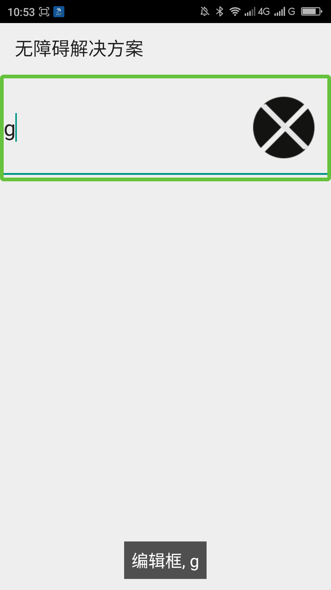
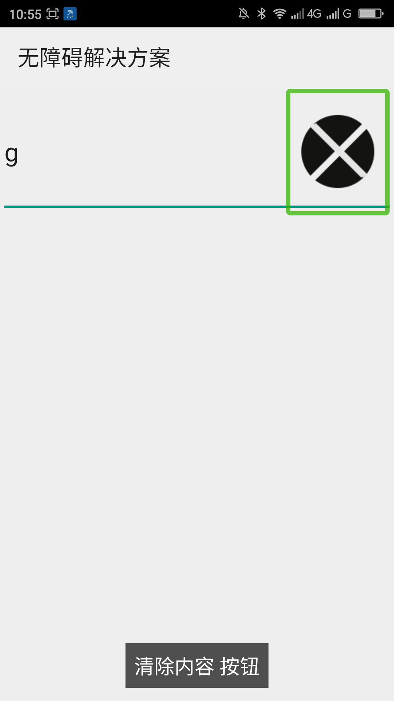

让以右边的图片作为清除按钮的自定义编辑框的清除按钮支持无障碍的方法____20160531
【问题描述】
在编辑框的右边添加一张图片，也就是使用android:drawableRight属性或使用setCompoundDrawables()方法（此方法的第3个参数是右边的图片）。然后判断当触摸的是右边的图片区域的时候就清空编辑框。由于此图片是在编辑框内，所以此图片默认是没有焦点的，所以屏幕阅读器用户无法知道有此功能，更无法操作此图片。
【问题代码】
下面的代码是继承与EditText的一个右边用图片作为清除按钮的自定义编辑框控件。
注：此控件必须设置右边有图片才能正常的显示、响应“清除”的功能。使用此控件的布局代码请参看“附1“。
复制内容
【问题解决方案描述】
用v4扩展包里面的ExploreByTouchHelper类给控件中的清除图片添加无障碍虚拟节点，添加虚拟节点之后屏幕阅读器用户的屏幕阅读器可以获得清除图片的焦点并且可以操作此清除图片。添加虚拟节点的方法是首先写一个继承与ExploreByTouchHelper的类，继承ExploreByTouchHelper类必须实现5个方法，分别是：getVirtualViewAt()，此方法通过x、yz坐标来寻找虚拟节点；getVisibleVirtualView()，此方法确定需要显示哪些虚拟节点；onPopulateEventVirtualView()，此方法填充虚拟节点的事件；onPopulateNodeVirtualView()，此方法填充虚拟节点的nodeInfo节点信息；onPerformActionForVirtualView(),响应无障碍事件的操作。在onPopulateNodeVirtualView()方法中必须给nodeInfo节点设置boundsInParent属性和text(或contentDescription)属性，否则程序会崩溃。在自定义视图初始化的时候用ViewCompat.setAccessibilityDelegate()方法（也可以用View.setAccesssibilityDelegate()方法，但是此方法只能在api14以后使用）给视图设置无障碍代理。最后要继承View的dispatchHoverEvent()方法,在此方法中把HoverEvent发送给ExploreByTouchHelper类的无障碍代理。
【前后效果图对比】
|  |  |
| 优化前，清除按钮无滑动和触摸焦点； | 优化后，清楚按钮有滑动和触摸焦点，聚焦朗读“清除内容 按钮”； |